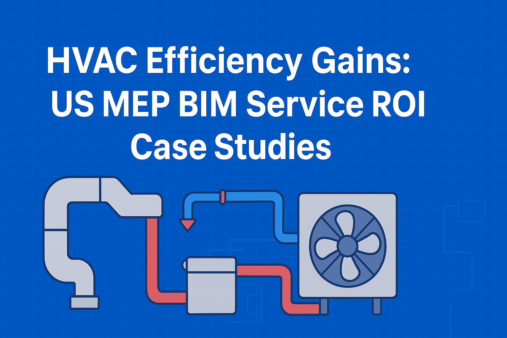
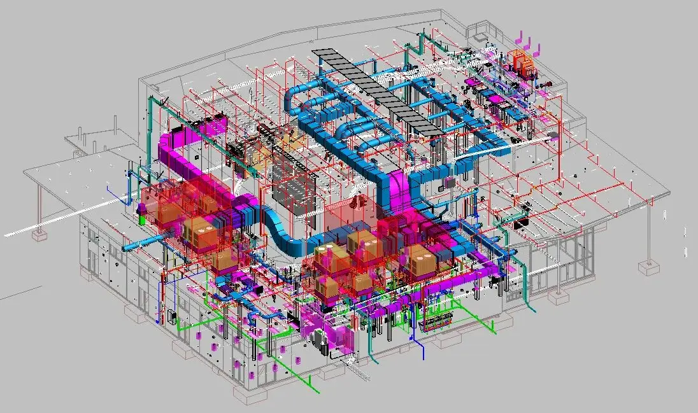

HVAC Efficiency Gains: US MEP BIM Service ROI Case Studies
If you walk into a new office building, hospital, or university campus these days, everything feels seamless, rooms are comfortable, air is fresh, and the temperature is just right. What many don’t realize is that behind this comfort is a quiet revolution in how construction and engineering teams make Heating, Ventilation, and Air Conditioning (HVAC) systems more innovative and more efficient. HVAC efficiency isn’t just about comfort; it means cost savings, less wasted energy, and more sustainable buildings across the United States.
In recent years, the push for greener construction, stricter building codes, and rising energy costs has put the spotlight on HVAC performance. Here’s where Mechanical, Electrical, and Plumbing Building Information Modeling, better known as MEP BIM, steps in. With BIM, teams can simulate, fine-tune, and optimize HVAC systems before anyone pours concrete or installs ductwork. This technology is helping US firms see measurable returns on investment (ROI) for their projects and users.

The State of HVAC and MEP in the USA
Let’s look at why HVAC efficiency matters now more than ever.
- High Operational Costs: Traditional HVAC systems are among the largest energy consumers in US commercial buildings. Inefficient design can lead to unnecessary costs over the building’s lifetime.
- Complex Maintenance Needs: Many HVAC problems arise from poor coordination between mechanical, electrical, and plumbing elements, resulting in hard-to-maintain systems and costly downtime.
- Changing Standards: US building codes and standards, like ASHRAE and LEED certifications, are becoming more demanding, requiring more innovative, more environmentally friendly designs.
- Demand for Integration: Owners, architects, and engineers are prioritizing integrated design solutions that bridge the gap between design and reality.
In short, every dollar saved on energy or maintenance in HVAC can add up to significant long-term gains. But traditional methods often fell short. Enter BIM.
What Are MEP BIM Services?
Before we dig into the case studies, let’s clarify the basics:
- Mechanical, Electrical, and Plumbing (MEP) BIM is a digital 3D modeling process that brings these crucial building systems together in a single, innovative platform.
- With BIM, teams can visualize how air ducts, piping, and electric wiring interact even before construction begins. Think of it as a digital twin that helps everyone “see the future,” making it easier to spot and fix conflicts or inefficiencies early.
How does BIM enhance HVAC efficiency?
- Design Accuracy: BIM models let engineers detect clashes between air ducts and structural beams: no more last-minute changes or mid-construction headaches.
- Lifecycle Optimization: BIM isn’t just for design. The model lives on through operation and maintenance, serving as a single source of truth for system upgrades and diagnostics.
- Seamless Integration: Advanced building automation strategies use BIM data to program and manage HVAC systems based on real-time occupancy and weather patterns.
- Scenario Testing: Teams can try out different HVAC equipment options digitally, balancing up-front costs against long-term savings.
Having a coordinated MEP BIM plan in place also helps with integrated building systems, think seamless communication between lighting, HVAC, security, and more.
If your organization is seeking guidance, it’s wise to learn from reliable partners for MEP BIM implementation who have proven experience coordinating these complex systems.
Understanding ROI in HVAC Projects
Let’s face it: whether you’re designing a hospital, a school, or a skyscraper, you need to justify investments.
ROI (Return on Investment) in HVAC projects typically revolves around:
- Energy Cost Savings: Lower energy bills due to optimized system design.
- Reduced Construction Changes: Fewer errors, change orders, and unexpected costs during construction.
- Maintenance and Lifecycle Savings: Easier-to-maintain systems with fewer breakdowns, leading to lower operational expenses.
Key Metrics to Watch:
- Annual energy consumption (kWh)
- Maintenance and repair frequency
- Time/cost savings during construction
- Occupant comfort and air quality improvements
- Payback period (how long until the efficiency investment “pays off”)
US Case Studies: HVAC Efficiency Gains with BIM
Let’s explore three real-life examples that illustrate how much MEP BIM services can change the game for HVAC efficiency in the US.
Case Study 1: Energy Reduction through BIM-Enabled Design Collaboration
👉(https://www.sciencedirect.com/science/article/pii/S2214509522008877)
A US academic building used BIM and Insight 360 to optimize HVAC layouts with energy simulations, guiding efficient system selection before construction.
Results:
- Reduced annual energy consumption
- Lower operating costs
- Virtually eliminated design risks
Case Study 2: IoT and BIM Integration for Predictive Maintenance
👉(https://wjarr.com/sites/default/files/WJARR-2020-0409.pdf)
A facility leveraged BIM and IoT sensors to create a digital twin, monitoring HVAC health and enabling predictive maintenance.
Results:
- Fewer emergency repairs
- Improved equipment uptime
- Enhanced, data-driven facility management
Case Study 3: BIM Coordination For Performing Arts Center
👉(https://www.teslaoutsourcingservices.com/case-study/mep-bim-modeling-bim-coordination-performing-arts-center.php)

For a 22,343 sq. ft. performing arts center, BIM at LOD 350 was used to model and coordinate MEP systems, resolving clashes and including seismic bracing measures.
Results:
- Minimized construction changes
- Improved coordination and safety
- Smooth, efficient installation
Measuring and Sustaining ROI
Achieving efficiency gains is just the start. Sustaining them over time is where US building owners truly see value.
How do firms ensure ongoing returns?
- Post-Occupancy Performance Tracking: After occupancy, data is gathered from sensors and monitoring systems to measure actual versus predicted performance.
- Periodic Model Updates: BIM models are updated as equipment is replaced or systems are upgraded, maintaining a live record for the asset.
- Continuous Commissioning: Ongoing analysis of HVAC system efficiency, with periodic tune-ups and recalibrations based on real-world data.
- Analytics Dashboards: User-friendly dashboards help facilities teams spot trends, diagnose issues early, and make data-driven decisions for continuous improvement.
Regular engagement with next-gen analytics tools and digital twin platforms ensures teams can spot issues before they become costly and keep everything on track, all while preserving the gains from the original investment.
Future Outlook: Next-Gen HVAC & BIM
The future of HVAC and MEP BIM is even more intelligent and more connected:
- Artificial Intelligence & Machine Learning: Predictive analytics will anticipate demand and equipment needs, automatically tuning performance room-by-room.
- IoT Everywhere: More sensors in the field will provide richer data, empowering real-time adjustments and granular control.
- Integrated Design and Delivery: Seamless collaboration between architects, engineers, and contractors, supported by shared digital platforms.
- Regulatory Shifts: As codes evolve, expect more emphasis on precise energy modeling and documentation, where innovative BIM platforms excel.
- Sustainability at the Forefront: US building owners increasingly prioritize not just the bottom line, but the environmental footprint, making sustainable MEP design strategies and coordinated project delivery in engineering a top priority.
Conclusion
Efficient, sustainable, and innovative buildings are today’s reality, enabled by MEP BIM services that deliver tangible ROI across the project lifecycle. By enhancing HVAC design and performance, integrating with digital tools, and leveraging trustworthy partners, US building owners can expect improved comfort, cost savings, and future-ready facilities.